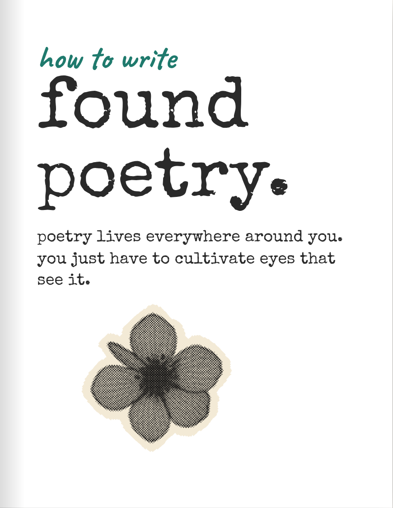
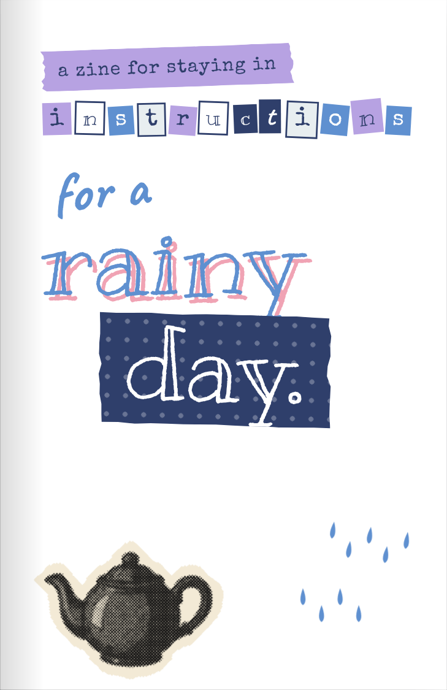

e-zines
flip through. write in them. print the paper version.

how to write found poetry
black out a letter, rearrange the scraps, keep your own field notes.

instructions for a rainy day
a zine for staying in. let it rain, make your rainy day list.